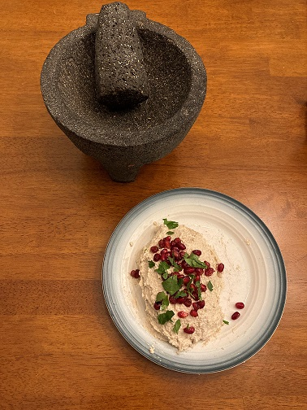
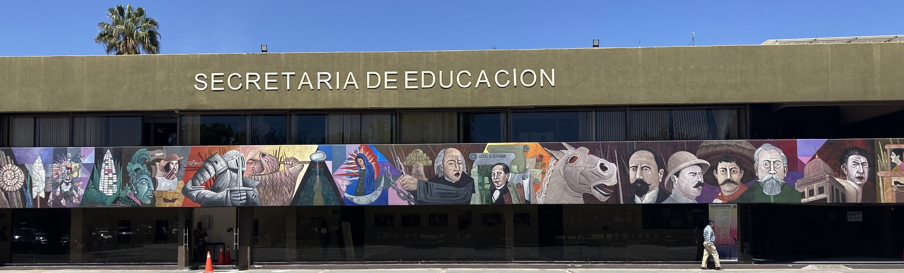

About Me
I am a Lecturer (Assistant Professor) in the Department of Government & Public Policy at the University of Strathclyde (Glasgow, Scotland). I received my PhD in Government from Harvard University in May 2024. I work at the intersection of comparative politics and public policy/administration, with a substantive focus on social policy (particularly education), bureaucratic politics, and state-society relations, and a regional focus on Latin America.
I study the politics of frontline bureaucrats with a participar interest in how the organisations they join shape their preferences and behaviours. These bureaucrats are at the heart of the modern state's enterprise. Their preferences and behaviours are thus central to understanding how citizens interact with and perceive the state, as well as the quality of services they receive. I have mostly studied these questions in Latin America, although I have also begun work in other parts of the Global South and in Scotland.
I earned a BA in Latin American Studies and Educational Studies from Macalester College (St. Paul, MN) and an MSc in Economics from the Instituto Tecnológico Autónomo de México (Mexico City). I am a former Fulbright IIE scholar and Princeton in Latin America fellow. I have spent significant time in Mexico City and Mérida, Mexico, Lima, Peru, Managua, Nicaragua, and São Paulo, Brazil.
I am passionate about teaching and mentoring. At the University of Strathclyde I teach master's level modules (courses) in Comparative Public Policy and Qualitative Methods. I am the recipient of the Sidney Verba Prize for Excellence in Undergraduate Teaching, the Harvard Government Department Peer Mentorship Award, and the Derek C. Bok Certificate of Distinction in Teaching.
Outside of academia, I enjoy reading fiction with friends (most recently, Tus sueños imperios han sido by Álvaro Enrigue) and cooking Mexican food (chiles en nogada, pictured below, are my specialty)
Contact Me
You can contact me at julia.coyoli@strath.ac.uk

Research Interests

My research sits at the intersection of comparative politics and public policy/administration. I study the politics of frontline bureaucrats with a paraticular interest in how the organisations they join shape their preferences and behaviours. I have mostly studied these questions in Latin America, although I have also begun work in other parts of the Global South and in Scotland. My work has been published in outlets such as Comparative Politics and World Development
My book manuscript, Reluctant Collaborators: How Mexican Unions Coproduce Policy Implementation documents and explains the marked variation in the implementation of frontline policies—those that, as education and policing, most directly affect citizen’s quality of life and shape their everyday experiences with public services. As implementing policies in these areas is of low electoral salience, I argue that the organisations representing frontline bureaucrats are central to understanding implementation.
First, I argue that the structure of the organisations, specifically whether they have monopoly representation or are fragmented into multiple organizations, shapes the government’s decision to offer inducements. A union that represents all of the relevant bureaucrats in a state has an incentive to protect any of its members from being sanctioned, as well as the collective action capacity to make that preference a reality. As such, monopoly organisations are more likely to block governments from attempting to sanction non-compliant members, compelling those governments to offer inducements in an attempt to achieve implementation.
However, not all monopoly organisations will accept offers of inducements. A second component of my argument consists of organisational preferences. I argue that the organisation's decision to accept inducements is a function of its pre-existing preferences regarding the policy’s goals and the process proposed to achieve those goals. While process-based opposition can be reduced via inducements, goal-based opposition is much harder to overcome. As such, organisations with this type of concern are more likley to reject offers of inducements. Finally, I argue that, when accepted, these inducements result in coproduced implementation, which a broad literature has shown to be the most effective form of policy implementation for frontline policies like education.
As such, the book puts forth an argument about both the causes and consequences of induced coproduction on the implementation of frontline policies. Coproduced implementation entails cooperation between organizations, like teachers’ unions, that represent frontline implementers and the government. This cooperation is essential because it helps to increase compliance with the policy to be implemented, to provide material resources to the state, and to orient how implementers, particularly those least positioned to succeed, use their discretion. In my argument, this coproduction does not emerge out of the stakeholders’ initial preferences but is induced. Since frontline workers are reluctant to collaborate with the reform, coproduction is only possible when they are incentivized to do so through inducements. The structure and preferences of the organisations representing those frontline workers determine both whether they are offered inducements and whether they accept those offers, respectively. Accordingly, these organisations are central to explaining not only the implementation outcome, but also the path to that result.
I assess this argument by examining the implementation of a major education reform, passed in 2013, across Mexican states. Specifically, it employs a mixed-methods approach, combining tracing the process by which the reform was implemented in three states, each of which follows a different trajectory and achieves a distinct implementation outcome, with a statistical analysis of implementation paths and outcomes across all of Mexico’s 31 states. The statistical comparisons serve to show that my argument is consistent with the variation in implementation strategies and outcomes across the country. To conduct these analyses, I created an original database that combines administrative records of teachers’ participation and results in the exams, local newspaper coverage of teachers’ unions and their protests, primary source union documents detailing union origins and beliefs, and coding of an insider informant’s (the Secretary of Education for the country) account of the implementation process across the 31 states. While the quantitative analyses can bolster claims of external validity in my analysis, understanding implementation also requires contextual knowledge of what occurs on the ground. For this reason, I construct qualitative case studies of the implementation process and outcomes in three Mexican states: Coahuila, Oaxaca, and Puebla. Each state represents one of the three outcomes in my argument, as well as the path that leads to that result. The case studies are constructed from a combination of newspaper coverage and more than 170 elite interviews I conducted with bureaucrats at the state-level ministry of education, governors and their close advisors, and leaders of the union(s) in each state.
This book focuses on the oft-overlooked implementation of frontline policies. Frontline policies are distinct from what has previously been studied in two key ways. First, they require the compliance of a large number of individuals, rather than simply a few top bureaucrats. By focusing on policies only requiring a few bureaucrats, scholars have emphasized the factors that shape subnational elected officials' incentives to implement policy, such as partisan alignment. By looking at frontline policies, this book, instead, turns our attention away from elected officials and onto the organizations that represent those on the frontline. In doing so, it provides a theoretical argument for understanding the factors that shape organizational decisions, which in turn affect the preferences and actions of frontline implementers en masse. Second, frontline policies are often rejected by the very individuals tasked with implementation. In studying the politics of implementation, many scholars have emphasized the important role that societal actors play in providing capacity when the state itself is lacking. This coproduction has been documented and explained in a wide variety of contexts and policy areas. However, this literature has almost exclusively studied empirical contexts where both parties (the state and society) want to see the policy implemented. In this book I put forth a theory of the novel concept of induced coproduction whereby those in society coproduce despite not wanting to see the policy implemented. In doing so, I show that cooperation is possible in unexpected circumstances, going against the conventional wisdom that negotiations with a strong opposition organization are unlikely. In making this argument, I build on the insights that scholars of coproduction provide about the importance of support from organized interests and actors, showing that the same benefits that aligned groups provide to benefit implementation can also support implementation, under certain conditions, when coming from oppositional groups.
places the organisations representing frontline bureaucrats at the centre of explanations for variation in policy implementation.
My research turns our attention away from which policies are passed and onto how governments translate those policies into action on the ground. I find that full implementation is rare, not for technical reasons, but rather because the individuals who need to comply frequently resist doing so. Yet, under certain conditions, some policies are implemented as designed. My work focuses on understanding those conditions.
In my dissertation book project I use a mixed methods study of the case of teachers and educational policy in Mexico to understand when policies are implemented. Specifically, I show that teachers and their unions were pivotal actors for the success of new policies. Specifically, I argue that new education policies were effectively implemented when governments and unions cooperated. I show that teachers’ unions tend to agree to cooperation when they only oppose the material costs of imple-mentation (while agreeing with its goals). The local government, who is tasked with taking action to implement a policy they did not design, will have an incentive to pursue cooperation when they face a united union that can resist their attempts to impose the reform. Thus, I find that, while im-plementation is not the optimal strategy for the local government or the teachers’ union, there are conditions under which it is in both their interests.
In other work, co-authored with Candelaria Garay (R&R at World Development), I explore how subnational regime dynamics shape the decisions that local governments make regarding healthcare provision and quality. Using evidence from Argentina, we find that less democratic regimes have higher infant mortality rates. Our results show that this effect is driven by provinces where governors are eligible for indefinite reelection. We also find that regime type has no impact on the provision of health services. However, protest, regardless of the subnational regime, has a positive impact on health service provision. In another project, co-authored with Emmerich Davies, Leslie Finger, and Jonathan Phillips (currently in the data collection phase), I study the factors that shape the beliefs, attitudes, and behaviors that public sector frontline providers hold. Through a regression discontinuity design coupled with an original survey of teachers in Brazil, we seek to understand both whether public sector employees differ in their beliefs from those who almost became public sector employees, as well as what aspect of this experience explains these different beliefs.
I am also interested in research about innovations in teaching and learning political science. In addition to my work as the Pedagogy Fellow for the Government Department, Paul Dosh and I have published in PS: Political Science & Politics about collaborating with undergraduates to produce political science research that involves significant fieldwork and results in a peer reviewed article.
Peer Reviewed Publications
Work in Progress
- “How Organizations Drive Implementation: Educational Quality, Teachers’ Unions, and Subnational Politics in Mexico” (Job Market Paper). Latest Version .
- “Bureaucratic Selection and Politics: Evidence from Teachers in Brazil” (with Emmerich Davies, Leslie Finger, and Jonathan Phillips).
- "Labor and Gender Representation: Teachers’ Unions in Comparative Perspective" (with Christopher Chambers-Ju and Candelaria Garay).